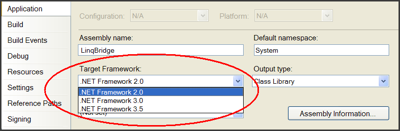

Extras
LINQBridge
You might already have discovered that LINQ is addictive: once you're accustomed to solving problems through slick functional queries, it really hurts
being forced back to the imperative style of C# 2.0!
LINQ's query operators are implemented from .NET Framework 3.5. And here lies a difficulty: your
clients might have only Framework 2.0 installed on their machines. So what does this mean if you
want to code in C# 3.0 and write LINQ queries?
The good news is that there is a solution. It relies on two things:
- Visual Studio 2008's multi-targeting feature
- LinqBridge.dll (a 60KB assembly)
With Studio's multi-targeting and LINQBridge, you'll be able to write local (LINQ
to Objects) queries using the full power of the C# 3.0 compiler—and yet your
programs will require only Framework 2.0.
LINQBridge is a reimplementation of all the standard query operators in
Framework 3.5's Enumerable class. It's designed to work with the C# 3.0
compiler, as used by Visual Studio 2008. LINQBridge comprises a "LINQ to
Objects" API for running local queries. (It doesn't include an implementation of
LINQ to SQL, nor LINQ to XML; a good compromise can be to force Framework 3.5
out to just the server machines, allowing LINQ to SQL to be used where it's
needed most).
LINQBridge also includes Framework 3.5's generic Func and Action
delegates, as well as ExtensionAttribute, allowing you to use C# 3.0's extension
methods in Framework 2.0.
In fact LINQBridge lets you use nearly all of the features in C# 3.0 with Framework
2.0—including extension methods, lambda functions and query comprehensions. The
only feature it does not support is compiling lambdas to expression trees (i.e., Expression<TDelegate>).
How does it work?
First, it's important to understand that C# 3.0 and Framework 3.5 are
designed to work with CLR 2.0—the same CLR version that Framework 2.0
uses. This means that the C# 3.0 compiler emits IL code that runs on the same
virtual machine as before.
This makes Framework 3.5 additive—just as Framework 3.0 was
additive—comprising additional assemblies that enhance the existing 2.0
Framework and CLR. So there's nothing to stop us from writing our own assemblies
that do the work of Framework 3.5 (at least, the critical bits required for
local LINQ queries).
But—you might ask—don't LINQ queries depend on Framework 3.5? Strictly
speaking, they don't. C# 3.0 expects that certain method signatures be
present—which Framework 3.5 just happens to provide. For example, consider the
following LINQ query:
int[] numbers = { 5, 15, 7, 12 };
var query =
from n in numbers
where n > 10
orderby n
select n * 10;
In compiling this, C# 3.0 first translates it to:
var query = numbers
.Where (n => n > 10)
.OrderBy (n => n)
.Select (n => n * 10);
The compiler then looks for Where, OrderBy and Select
methods. The critical thing is that it can find appropriately named methods with the correct signatures (typically extension methods). But it
doesn't matter what assembly the methods come from. LINQBridge simply provides
another source of these methods—that are functionally identically to those
implemented in the Framework 3.5 assemblies.
How to use LINQBridge
LINQBridge requires Visual Studio 2008 (or the standalone C# 3.0 compiler, if
you're keen). First, go to project properties, and change the Target
Framework to 2.0 or 3.0:

This is a safeguard that prevents you from accidentally referencing Framework
3.5 assemblies. If your project already references System.Core, the reference
will be greyed out (you can safely delete it).
The next step is to add a reference to LINQBridge.dll.
That's all there is to it, now you can start writing LINQ queries!
When all of your clients later upgrade to Framework 3.5, you can upgrade your
project simply by changing the Target Framework back to 3.5 and replacing the LINQBridge reference with System.Core.
LINQBridge uses the standard LINQ namespaces, so no code edits will be required.
What if Framework 3.5 is Installed?
The presence of Framework 3.5 does not impede LINQBridge in any way. If your
project references LINQBridge during compilation, then it will bind to LINQBridge's query operators; if it references System.Core
during compilation, then it will bind to Framework
3.5's query operators.
Can I use LINQBridge with C# 2.0 and Studio 2005?
You can—but the query operators will be awkward to use without lambda
expressions, extension methods, query syntax, etc.
Licensing
LINQBridge is distributed under an open-source license (MIT) that doesn't place
any restrictions on what you can do with
the source code. The (original) internal implementation was my own; however Microsoft,
obviously, came up with the idea of having a set of query operators with those
names and functioning in that manner. LINQBridge does not constitute an attempt
to erode Microsoft's claims (if any) to this pattern.
Download
Click here to download
from Google Code.
LINQBridge has been enhanced extensively by other contributors.
- November 2007: Released
- 13 June 2008: Bug in Count methods was fixed
- 10 August 2008: Overflow checking added to Sum,
null-argument-checking to Count, and AllowPartiallyTrustedCallers
attribute added to assembly
- October 2009: Work from the BackLINQ project was merged
Discussion Group
Click here for the
Google-hosted discussion group.